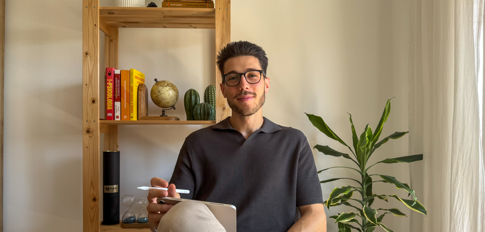
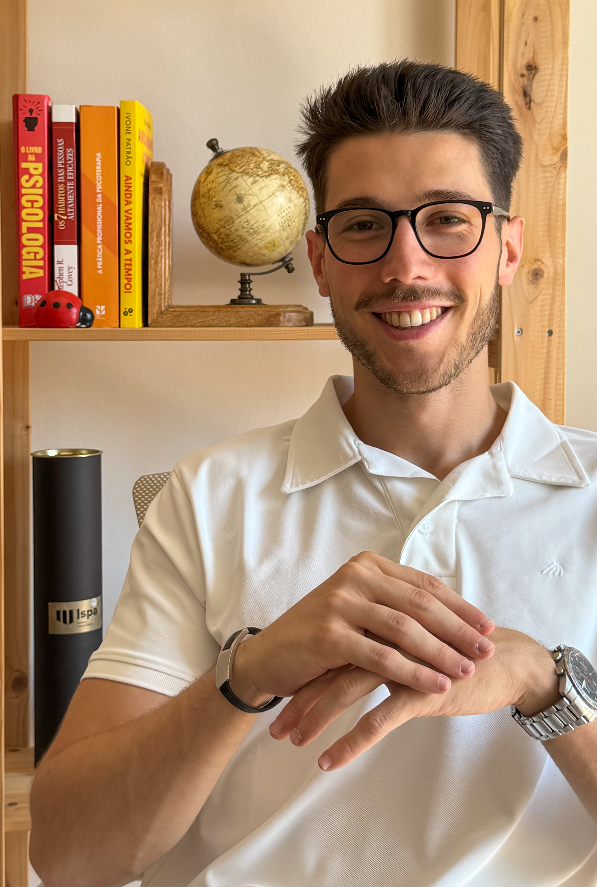

Treina a mente como treinas o corpo. Inspira. Ataca. Evolui.

Sentes que o teu desporto, aquilo que mais amavas, está a começar a desgastar-te — e não sabes como mudar isso? Eu também já o senti. O meu nome é Josué e, provavelmente tal como tu, cresci a sonhar uma coisa: ser atleta profissional Pratiquei e competi em várias modalidades - desde futebol, natação, voleibol, a futebol americano. Ganhei medalhas, fui capitão, adorei competir. Por fora, parecia estar tudo bem! Mas por dentro… nem sempre era assim... Saber Mais
Psicólogo
Especialista em performance desportiva e gestão emocional de atletas profissionais.
Psicólogo
Focado em acompanhamento psicológico de equipas e treinadores para otimizar a coesão e motivação.
Psicóloga
Trabalha com atletas jovens no desenvolvimento da autoconfiança e foco competitivo.
Psicóloga
Acompanha atletas em reabilitação física, trabalhando o equilíbrio entre corpo e mente.
Psicólogo
Experiente em psicologia de alto rendimento e gestão de pressão competitiva.
Psicóloga
Especialista em desenvolvimento pessoal e bem-estar mental no contexto desportivo.
"Quando contactei o Josué o objetivo era ajudar o meu filho a
recuperar a confiança e a alegria que tinha a jogar futebol.
Tinha receio de voltar a errar, ficando mais nervoso, com dores de cabeça e barriga,
chegando a pedir para não jogar com medo de voltar a errar.
Na primeira sessão o meu filho estava muito apreensivo por não conhecer o Psicólogo,
mas logo essa apreensão desapareceu e o meu filho partilhou com situações que nunca
tinha conseguido falar comigo.
O meu filho conseguiu adotar estratégias para lidar melhor com as inseguranças e
comentários menos positivos dos colegas. Não só foram exclusivas para o desporto mas
também para a escola, conseguindo melhorar a sua ansiedade antes dos testes e lidar
melhor com as emoções.
Um obrigada por ajudar o meu filho a recuperar a confiança e a alegria no
futebol."
"Professional, empathetic, and very supportive."
— Client B"Workshops were insightful and engaging."
— Client C"Workshops were insightful and engaging."
— Client C"Workshops were insightful and engaging."
— Client CPreenche com os teus dados e descobre como te podemos ajudar a melhorar o teu bem-estar.